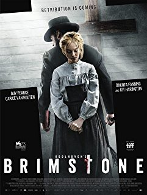

#9077 Brimstone: Erlöse uns von dem Bösen
 
 IMDB-Wertung: 7.1 / 10
IMDB-Wertung: 7.1 / 10  Metascore: 0
Metascore: 0 
A triumphant epic of survival and a tale of powerful womanhood and resistance against the unforgiving cruelty of a hell on earth. Our heroine is Liz (Dakota Fanning), carved from the beautiful wilderness, full of heart and grit, hunted by a vengeful Preacher (Guy Pearce) - a diabolical zealot and her twisted nemesis. But Liz is a genuine survivor; she's no victim - a woman of fearsome strength who responds with astonishing bravery to claim the better life she and her daughter deserve. Fear not. Retribution is coming.
Jahr: 2016
Dauer: 148 Minuten
FSK: 16
Land: Niederlande Studio: Koch MediaTonspuren: DTS - ,
Untertitel: Deutsch, Englisch,
Auflösung: 1080p (1920x800) Größe: 8089 MB
Genre: Action, Thriller, Western
Regisseur: Martin Koolhoven
Drehbuch: Rafael Sabatini
Soundtrack: Junkie XL
Darsteller:
 Dakota Fanning als Liz
Dakota Fanning als Liz Guy Pearce als The Reverend
Guy Pearce als The Reverend Kit Harington als Samuel
Kit Harington als Samuel Carice van Houten als Anna
Carice van Houten als Anna Paul Anderson als Frank
Paul Anderson als Frank Carla Juri als Elizabeth Brundy
Carla Juri als Elizabeth Brundy Emilia Jones als Joanna
Emilia Jones als Joanna- Naomi Battrick als Narrator / Older Sam
 Jack Roth als Wolf
Jack Roth als Wolf William Houston als Eli
William Houston als Eli Frederick Schmidt als Sheriff Zeke
Frederick Schmidt als Sheriff Zeke- Ivy George als Sam
- Jack Hollington als Matthew
- Vera Vitali als Sally
 Justin Salinger als Doctor
Justin Salinger als Doctor- Bill Tangradi als Nathan
- Adrian Sparks als Eli's Father
 Tygo Gernandt als Crawling outlaw
Tygo Gernandt als Crawling outlaw Tim Ahern als Man in Gunfight
Tim Ahern als Man in Gunfight- Peter Blankenstein als Man in Gunfight
- Joseph Kennedy als Husband of pregnant woman
 Hon Ping Tang als Meng
Hon Ping Tang als Meng Dan van Husen als Coach Driver
Dan van Husen als Coach Driver- Joe David Walters als Customer Sally
- Alexandra Guelff als Working Girl
- Natascha Szabo als Working Girl First Period
- Andrew Harwood Mills als Man at Bar
- Griffin Stevens als Customer
- Leon van Waas als Barman
- Bob Stoop als Drunken Miner #2
 Henry Buchmann als Mine Worker (uncredited)
Henry Buchmann als Mine Worker (uncredited)- Dorian Lough als Street Preacher
- Martha Mackintosh als Pregnant woman
- Sam Louwyck als Marriage Broker
- Fergus O'Donnell als Fred Eastman
- Ad van Kempen als Arie
- Frieda Pittoors als Agatha
- Farren Morgan als Mike
- Charlotte Croft als Abigail
- Ellie Shenker als Young girl
- Isabella Depeweg als Working Girl Second Period
- Sid Van Oerle als Drunken Miner #1
- Amelie Ha als Chinese Girl
- Baely Saunders als Jackie
- Alexandra Wirth als Working Girl First Period
- Judith Edixhoven als Working Girl 2
- Irene van Guin als Working Girl First Period
- Katharina Frucht als Working Girl First Period
- Paula Siu als Meng's wife
- Lydia Pauley als Working Girl 3
Datei: X:\HD-Western-2000-2015\Brimstone Erlöse uns von dem Bösen (2016, FSK16, 1920x800).mkv seit 19.07.2018
Festplatte: HD Eastern+Western
 Es gibt insgesamt 61 Filme in der Gruppe 'HD-Western-2000-2015'
Es gibt insgesamt 61 Filme in der Gruppe 'HD-Western-2000-2015'